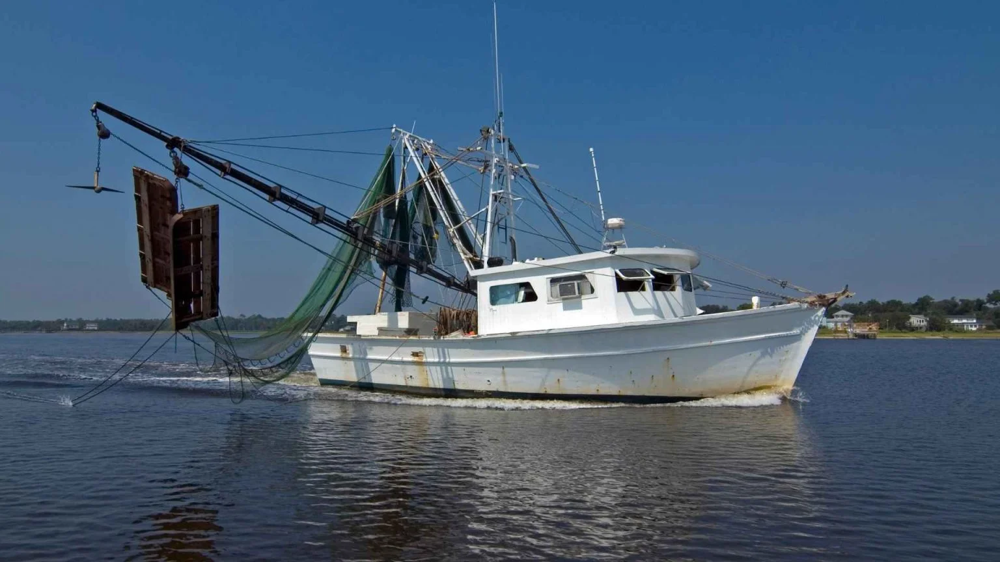
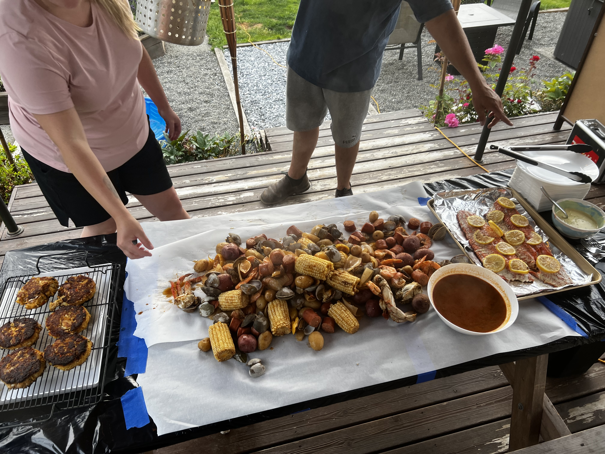

These are the activities mostly done by locals.
Fishing!


there are pleny of river's to Fish. There are hundreds of lakes. There is ocean fishing.
Washington is such a universal place to go do many thing's including fishing. It has so may types and areas to fish in wheater you like saltwater or fresh water fishing. There is every thing from salomon, Halibet, to fresh water trougt and catfish. Get you're pole ready and hit the water ways. These images are all my personal images and some of the bounty we caught out of the Puget Sound Fresh that moring for a seafood boil!.